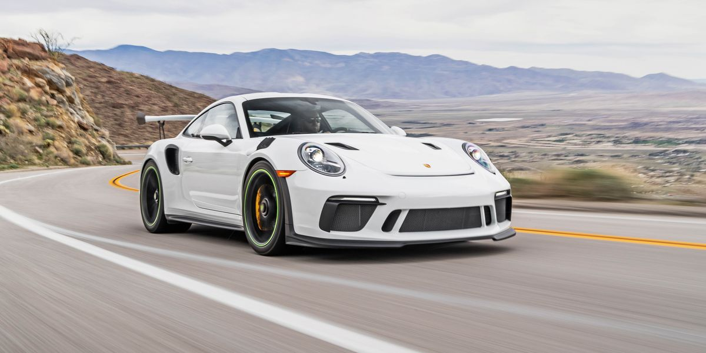
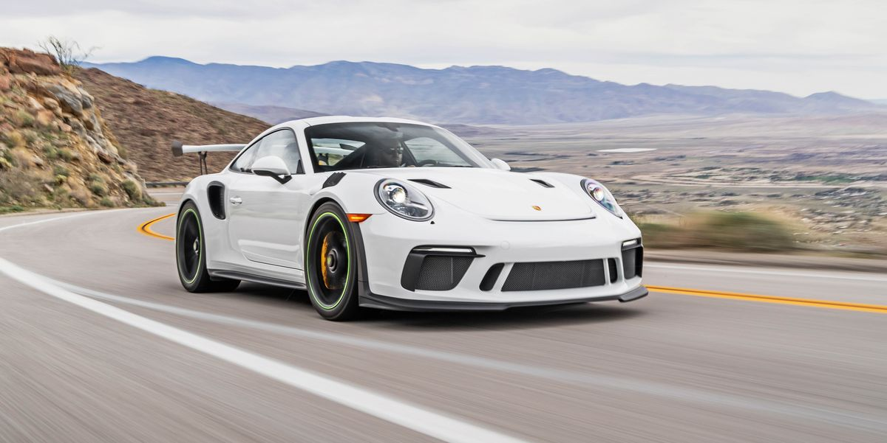

Porsche Gt3rs
Un homenaje al amor puro por los autos con cáracter y determinación. Así puede definirse al nuevo Porsche 911 GT3 RS, construido sobre la actual carrocería 991.2 por su código interno y que hoy por hoy, es lo más extremo que Porsche produce en cuanto a manejo y prestaciones para pista.
Si bien es un auto totalmente legal para su uso en calle, su desarrollo fue enfocado en la competición en Nürburgring razón por la que recurre a una pinta radical con difusores, alerones y entradas de aire a lo largo y ancho de la carrocería.
Pero su motor es la joya que corona esta obra maestra. Se trata del 911 de aspiración natural más potente de la historia, con su legendario motor 6 cilindros Bóxer de 4.0 litros de desplazamiento que produce 520 caballos de potencia a unas escalofriantes 9.000 rpm y 470 Nm de torque.
| Potencia | 520 caballos |
|---|---|
| Torque | 470 N/m |
| Velocidad maxima | 312 Km/H |
| 0-100 Km/h | 3.2 s |
| Peso | 1500 Kg |
| Precio | 224.100 euros |
 
